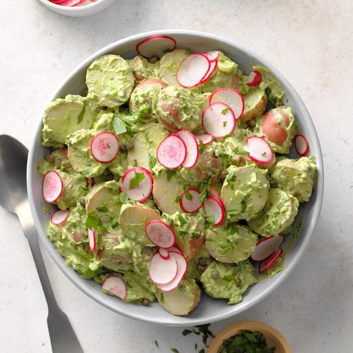

Green Goddess Vegan Potato Salad

Ingredients
- 2 pounds baby red potatoes, halved
- 4 green onions
- 2 medium ripe avocados, peeled and pitted
- 1/2 cup sprigs fresh parsley, stems removed
- 3 tarragon sprigs, stems removed
- 2 teaspoons capers, drained
- 1 teaspoon seasoned salt
- 1 celery rib, finely chopped
- Sliced radishes
- 1/2 cup vegan mayonnaise
Directions
- Place potatoes in a large saucepan; add
water to cover. Bring to a boil. Reduce
heat; cook, uncovered, until tender, 8-10 minutes.
- Meanwhile, chop green onions, reserving
white portions for salad. Add green portions
to a blender. Add avocados, parsley, mayonnaise,
tarragon, capers and seasoned salt. Cover and
process until blended, scraping down sides as needed.
-
Drain potatoes; transfer to a large bowl. Add celery,
white portions of green onions, and dressing; toss
to coat. Refrigerate, covered, at least 1 hour.
Top with radishes and additional parsley.